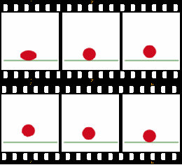
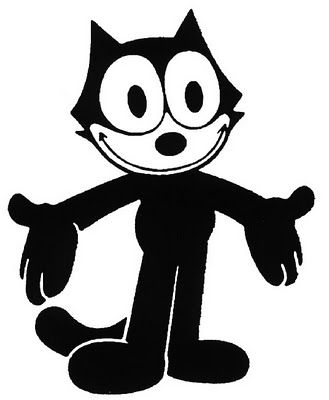

La Animacion

La animacion es un proceso, utilizado por uno o mas animadores, para dar la sensacion de movimiento a imagenes, dibujos u otro tipo de objetos inanimados (figuras de plastilina, por ejemplo). Se considera, normalmente, una ilusion optica. Existen numerosas tecnicas para realizar una animacion que van mas alla de los familiares dibujos animados.
Los cuadros se pueden generar dibujando, pintando o fotografiando los minusculos cambios hechos  repetidamente a un modelo de la realidad o a un modelo tridimensional virtual; tambien es posible animar objetos reales y actores. Entre los formatos de archivo de animacion (o que soportan animacion) se encuentran el GIF, el SVG, etc. Las animaciones en GIF son guardadas imagen por imagen; sin embargo, existen animaciones que no se logran asi, sino que son interpretadas y "armadas" en tiempo real al ejecutarse como el SVG.
1824.- Primeros estudios, Peter Roget presenta -The persistence of vision with regard to moving objects- en la British Royal Society.
1845.- Joseph Antonie Plateau y el Dr. Simon Ritter construyen una maquina llamada Phenakistoscopio
1833.- Horner desarrolla el zoetrope a partir del Phenakistoscopio de Plateau
 1872.- Eadweard Muybridge comienza su recopilacion de imagenes de animales en movimiento.
1887 a 1889.- Thomas Edison crea su Kinetoscopio, el cual proyecta 13 segundos de pelicula.
1889.- George Eastman Comercializa la pelicula, fotografias, cuya banda esta formada por Nitrocelulosa
1896.- Thomas Armat diseña el Vitascopio.
1906.- James Stuart Blackton realiza la primera Animacion, llamada -Homorous phases of funny faces-. Winsor McCay produce una animacion titulada -Gertie the Trained Dinosaur- formada por 10000 dibujos, que puede considerarse la primera pelicula con animacion.
1908.- Emile Cohl produce una pelicula basada en Figuras Blancas sobre fondo negro, Winsor McCay produce una secuencia de animacion basada en su personaje -Little Nemo-
1913.- Pat Sullivan crea una serie de animacion llamada -Felix el gato-.
1915.- Earl Hurd crea la animacion basada en acetatos (Celdas de animacion)
1917.- El apostol Largometraje de integramente realizado en animacion de Quirino Cristiani autor Italo-Argentino.
1919.- International Feature Syndicate produce varios titulos -Silk Hat Harry-, -Bringing up father- y -Krazy Kat-.
1923.- Walt Disney extiende las tecnicas de Max Fleischer para combinar accion real con personajes de animacion en la pelicula -Alicia en el pais de las maravillas- (-Alices Wonderland-).
 1926.- Lotte Reiniger produce un largometraje de animacion titulado -Prince Achmed-.
1926.- Lotte Reiniger produce un largometraje de animacion titulado -Prince Achmed-.1928.- Walt Disney produce la primera pelicula de animacion con sonido sincronizado, llamada -El raton Mickey- (Mickey Mouse). A partir de estos momentos, y durante una decada, se van perfeccionando las tecnicas de animacion que se seguiran usando hasta nuestros dias.
1943.- John y James Whitney producen -Five Abstract Film Exercises-.
1945.- John Witney crea los graficos por ordenador analogico.
1961.- John Witney crea secuencias de titulos para television con un mecanismo diferencial.
1963 a 1967.- Se producen una docena de peliculas en la Bell Telephone Laboratories.
1963.- E. Zajac crea la primera animacion por ordenador: -Two-gyro gravity gardient attitude control system-.
1964.- Ken Knowlton, comienza a desarrollar tecnicas de ordenador para producir peliculas de animacion.
F. Sinden hace -Force, Mass and Motion-, una pelicula que demuestra las leyes del movimiento de Newton, usando el lenguaje FORTRAN.
Huggins y Weiner hacen -Harmonic phasors-, la cual muestra la composicion de complicadas formas de onda periodicas.
McCumber crea una pelicula que muestra el efecto de la oscilacion Gunn, la cual se produce en los semiconductores.
Julesz y Bosche experimentan en la vision humana y en la percepcion.
Noll crea peliculas con estereovision.
Ken Knowlton crea el lenguaje BEFLIX en un IBM 7094. Este lenguaje manipula directamente la matriz de 252x184 pixeles con 3 bits, lo cual le permite representar ocho niveles de gris.
EXPLOR de K. Knowlton y GENESYS, desarrollador por Ronald Beacker en el MIT para tu tesis.
SCANIMATE, de Computer Image Corporation, es un sistema de animacion analogico que permite al animador modificar las señales producidas por el sintetizador de video. Con dicho sistema se crean animaciones para las peliculas -2001: Una Odisea en el Espacio- (2001: A Space Odyssey) y -Submarino Amarillo- (-Yellow Submarine-).
CAESAR extiende las capacidades de SCANIMATE permitiendo el control de las partes de personajes de animacion, asi como la produccion del intercalado.
1971.- Burtnyk y Wein en el Consejo Nacional de Investigacion de Canada Desarrollan los principios del intercalado por Ordenador.
1978.- PAINT, desarrollado por Smith, Permite colorear usando un lapiz y una tableta.
SOFTCEL, creado por Stem, es un sistema que usa las memorias de imagen (Frame Buffer)para reemplazar las operaciones de copiar manualmente dibujos a los acetatos y luego colorearlos.
1979.- TWEEN, creado por Catmull en 1979, es un programa que proporciona los medios para generar las imagenes de personajes. Su principal objetivo es la produccion de intercalado.
1979.- Lucasfilm crea los efectos de las peliculas -Star Trek II- y -El retorno del Jedi- usando la tecnica de los sistemas de particulas desarrollada por Reeves.
La pelicula -Tron- de Walt Disney es producida por MAGI, Robert Abel, Information International Inc, y Digital Effects.
1986.- Edwin Catmull y Alvy Ray Smith, tras trabajar en el instituto Tecnologico de Nueva York, junto con otros miembros de Lucasfilm, crean Pixar. John Lasseter produce las siguientes peliculas de Pixar: -Luxo Jr.-, -Red Dreams-, -Tin Toy- y -Knickknack-.